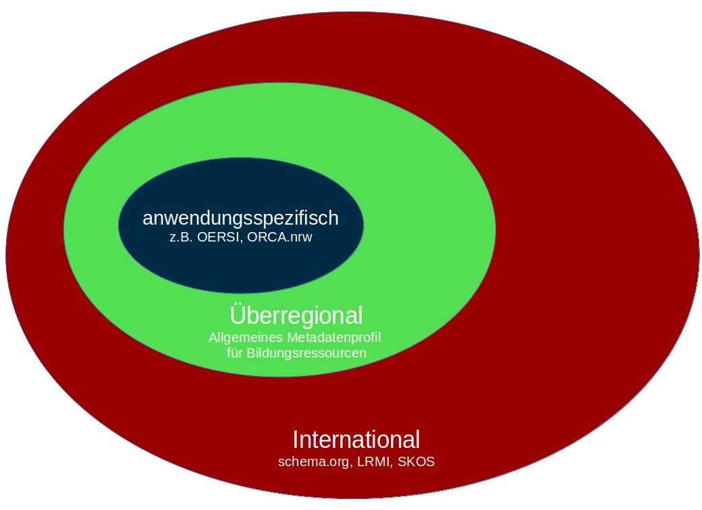
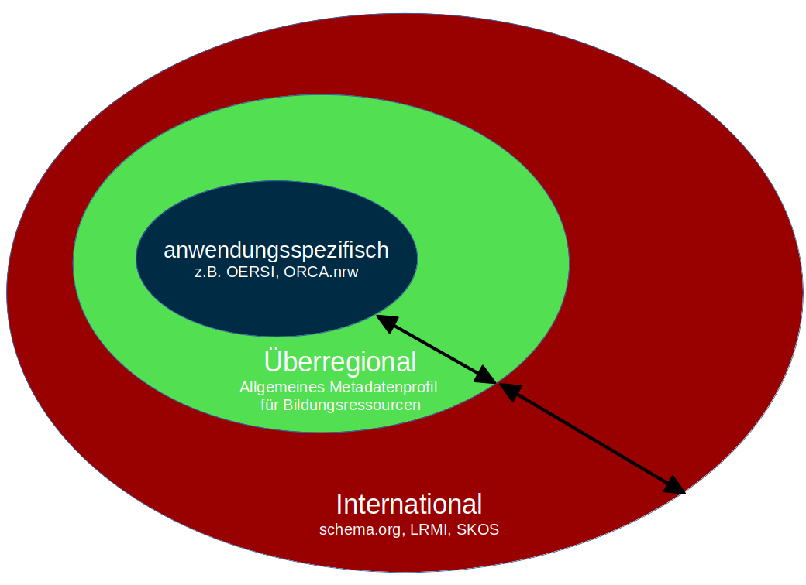
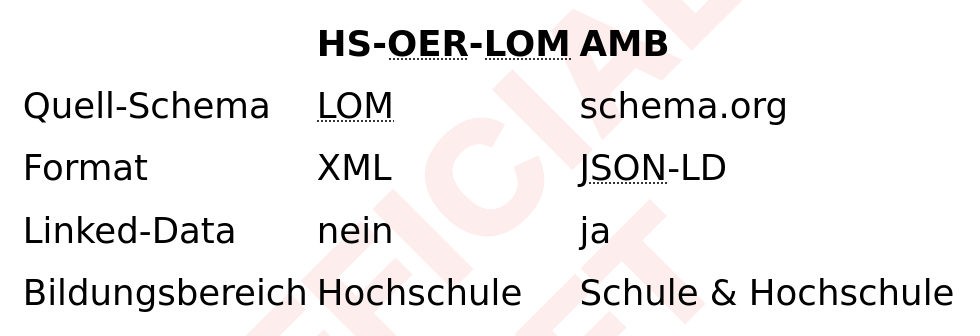

AMB
Allgemeines Metadatenprofil für Bildungsressourcen
Adrian Pohl
Offene Infrastruktur, Hochschulbibliothekszentrum NRW (hbz)

OER-Repo AG, WWW, 4.8.2022
Diese Präsentation:
http://slides.lobid.org/2022-08-amb/

Agenda
- Was ist das AMB?
- Auf welchen Standards basiert AMB?
- Was ist das AMB?
- Wie wird AMB entwickelt?
- Wer ist beteiligt?
- Wer nutzt AMB?
Was ist das AMB?
AMB = Allgemeines Metadatenprofil für Bildungsressourcen
Was macht ein Metadatenprofil?
Gibt an welche existierenden Metadatenschemas (z.B. Dublin Core, schema.org) und welche Elemente und Typen daraus benutzt werden
Definiert Einschränkungen für die Nutzung des/der Schema(s)
z. B. Einschränkungen auf Felder (welche Felder, Pflichtfeld: ja/nein, Häufigkeit) oder Werte (Formatvorgaben, kontrollierte Vokabulare)
Zwecke des AMB
Gemeinsame Konventionen für interoperable Metadaten spezifizieren
Anwendung internationaler Standards im DACH-Raum erleichtern
Instanzdaten auf Profilkonformität prüfen
Prinzipien
Web-Konformität, sämtliche Daten sind Linked-Data-konform
Einfache Verständlichkeit und Anwendbarkeit
Maschinen- und Menschenlesbarkeit: Schema & HTML-Spezifikation
Auf welchen Standards basiert AMB?
Bei der Standardisierung werden existierende Standards berücksichtigt und soweit es geht nachgenutzt.
Standardisierungsebenen
Gegenseitiger Einfluss
Internationale Standards
Datenformat: de-facto Standard JSON(-LD)
schema.org als Basis-Metadatenschema
Simple Knowledge Organization System (SKOS) für die Definition und Publikation kontrollierter Vokabulare
Überregionale Aktivitäten
DINI AG KIM: Kompetenzzentrum Interoperable Metadaten, OER-Metadatengruppe
Ein überinstitutioneller, institutions- und projektunabhängiger Rahmen zur Standardentwicklung
Standardisierung von Metadatenschemas und kontrollierten Vokabularen
AMB und HS-OER-LOM
Warum ein zweites OER-Metadatenprofil?
Mit LOM for Higher Education OER Repositories wurde bereits ein Profil inklusive XML Schema von der OER-Metadatengruppe veröffentlicht, das auf LOM (Learning Objects Metadata) basiert
LOM ist XML-basiert und eignet sich für einige Zwecke (z.B. OAI/PMH) gut, für das Web ist schema.org/LRMI besser
Warum ein schema.org/LRMI-Profil?
Interesse an LRMI ist groß in der deutschsprachigen OER-Welt, allerdings gibt es keine leichte Anleitung, wie man es am besten nutzt
In OERSI gab es konkretem Bedarf an einem an Standards orientierten JSON Schema für OER-Metadaten
Vergleich AMB HS-OER-LOM
Wie wird AMB entwickelt?
JSON Schema als zentrales Dokument
Das JSON Schema legt Felder, Wertetypen & referenzierte kontrollierte Vokabulare fest:
https://w3id.org/kim/amb/draft/schemas/schema.json
Änderungen/Ergänzungen werden zuerst im JSON Schema ergänzt und getestet
Im zweiten Schritt wird die HTML-Spezifikation entsprechend angepasst
Kontrollierte Vokabulare als separate SKOS-Datei
Kontrollierte Vokabulare/Wertelisten sind separat als SKOS-Datei mit SkoHub Vocabs veröffentlicht und im Schema referenziert
HCRT, Hochschulfächersystematik
Nachnutzung von im HS-OER-LOM-Kontext entstandenen Vokabularen, was eine gewisse Interoperabilität beider Profile gewährleistet
Entwicklungprozess
Entwicklung findet auf GitHub statt, siehe auch die StöberSpecs-Prozesse
Überblick mit Kanban Board
Monatliche Videokonferenz mit 5-10 Teilnehmer*innen zur Vorstellung des Fortschritts, Diskussion von Ergänzungen und Verteilen der Aufgaben (siehe die Notizen auf der Wikiseite)
Derzeitiger Status des Profils:
weit fortgeschrittener, produktiv genutzter Entwurf
Wer ist beteiligt?
Das Wertvollste am AMB ist die Community dahinter.
Aus dem Repo-AG-Kontext
OERSI
ORCA
Twillo
ZOERR
Andere Hochschulakteure
ComeIn, ein BMBF-gefördertes Projekt im Kontext Lehrerbildung
SLUB Dresden, für OER Display
Aus dem Schulbereich
HPI Schulcloud
Landesmediumzentrum Baden Württemberg
Pädagogisches Landesinstitut Rheinland-Pfalz
Wir lernen online
Sonstige
EduSharing
GWDG